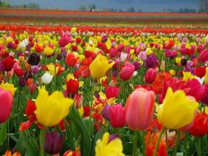

Тюльпа́н (лат. Túlipa) — род многолетних травянистых луковичных растений семейства Лилейные (Liliaceae),
в современных систематиках включающий более 80 видов. Центр происхождения и наибольшего разнообразия видов тюльпанов
— горы северного Ирана, Памиро-Алай и Тянь-Шань. За 10—15 миллионов лет эволюции тюльпаны расселились до Испании и Марокко на западе,
до Забайкалья на востоке и до Синайского полуострова на юге. На севере интродуцированные человеком популяции тюльпана лесного достигли Шотландии
и южного побережья Скандинавии. Все тюльпаны — типичные геофиты-эфемероиды, приспособившиеся к жизни в горных, степных и пустынных
местностях с жарким сухим летом, холодной зимой и короткой тёплой и влажной, дождливой весной.
Развитие тюльпана от семени до цветущего растения занимает от трёх до семи лет.
Смена поколений луковиц, в отличие от нарциссов, происходит ежегодно.
Во время недолгой весенней вегетации тюльпан цветёт, плодоносит и закладывает под землёй молодые луковицы, а отцветшая луковица умирает.
В период летнего покоя, а у некоторых видов и зимой, внутри луковицы, формируются зачатки побега и цветка будущего года. Осенью луковица
даёт корни и завершает закладку плодоносящего побега.
Тюльпан Геснера и его гибриды с тюльпаном Фостера — наиболее экономически важная луковичная декоративная культура,
выращиваемая и в открытом грунте, и на срезку в теплицах.
в современных систематиках включающий более 80 видов. Центр происхождения и наибольшего разнообразия видов тюльпанов
— горы северного Ирана, Памиро-Алай и Тянь-Шань. За 10—15 миллионов лет эволюции тюльпаны расселились до Испании и Марокко на западе,
до Забайкалья на востоке и до Синайского полуострова на юге. На севере интродуцированные человеком популяции тюльпана лесного достигли Шотландии
и южного побережья Скандинавии. Все тюльпаны — типичные геофиты-эфемероиды, приспособившиеся к жизни в горных, степных и пустынных
местностях с жарким сухим летом, холодной зимой и короткой тёплой и влажной, дождливой весной.
Развитие тюльпана от семени до цветущего растения занимает от трёх до семи лет.
Смена поколений луковиц, в отличие от нарциссов, происходит ежегодно.
Во время недолгой весенней вегетации тюльпан цветёт, плодоносит и закладывает под землёй молодые луковицы, а отцветшая луковица умирает.